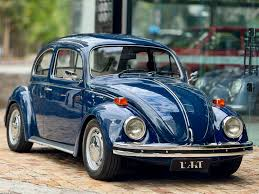

O Fusca, projetado por Ferdinand Porsche na Alemanha nazista dos anos 30 como um "carro do povo" (Volkswagen), tornou-se um ícone mundial com mais de 21 milhões de unidades produzidas.
Conhecido pelo motor boxer refrigerado a ar e design arredondado, o modelo teve produção no Brasil de 1959 a 1986, retornando entre 1993 e 1996.
